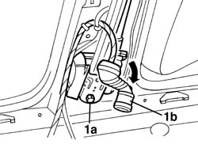
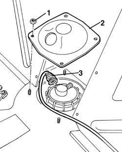
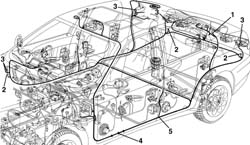

5505C40 cabin wirirng - r r
- Path
- Procedures > 55 ELECTRICAL EQUIPMENT > 5505 ELECTRICAL CIRCUIT FOR INSTRUMENTS/INDICATORS > 5505C vehicle compartment wiring > 5505C40 cabin wirirng - r r
- Kind
- repair procedure (removal / refitting; the operation number is the code)
- Applies to
- all engines; all production periods
- Interactive page
- https://sloeber94.github.io/elrnDB-a156/en/#/3238395
Applies to: all engines; all production periods
Applies to: all engines; all production periods
 Removing
Removing
 Refitting
Refitting1. Unloose pretension screws (1a) right and left side till you can extract rear door electric connections (1b) from their seats.

Applies to: all engines; all production periods
1. Unscrew cover screws on fuel reservoir.
2. Remove cover.
3. Disconnect electric connection.

Applies to: all engines; all production periods
1. Disconnect trunk compartment cover loom electric connection.
2. Disconnect mass terminals.
3. Disconnect remaining electric connections.
4. Open stop clamps.
5. Remove loom.

Applies to: all engines; all production periods
Refitting
RemovingCheck harness is not damaged and each conductor is properly anchored to connections.
Check connections have secondary lock devices.
if necessary carry ouy proper continuity tests.
Position rear loom again.
Block it with stop clamps.
Connect electric connections.
Connect mass terminals.
Connect trunk compartment cover loom electric connection.
Connect fuel level/pump electric connection.
Reassembly cover by fixing it with screws.
Position rear door electric connections again and tighten pretensioning screws right and left side by fixing them to the prescribed couple.
 | Fastening | Component | Ø | Value (daNm) |
|---|---|---|---|---|
- | Bolt | FRONT SEAT BELT PRETENSIONER. | - | 3.6 - 4.4 |